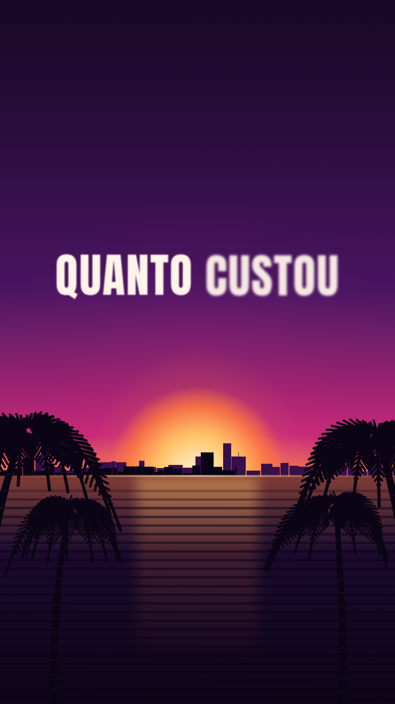

O gancho
O horizonte acende do preto, o céu de Vice City queima de baixo para cima e a pergunta sobe gigante sobre o pôr do sol.

- 0,0 s Luz A linha do horizonte nasce como um ponto no centro e corre para as pontas em 600 ms.
- 0,4 s Luz O céu queima de baixo para cima (preto → roxo → rosa → laranja) e o sol sobe meia altura do mar.
- 0,75 s Objeto As palmeiras sobem das bordas com paralaxe; a cidade aparece em silhueta no horizonte.
- 1,0 s Tipografia "QUANTO CUSTOU" sai do desfoque palavra a palavra, 45 ms entre elas.
- 1,5 s Tipografia Na batida, "GTA VI?" chega da profundidade letra a letra e acende no degradê do pôr do sol.
- 2,8 s Luz Um brilho atravessa "GTA VI?" uma vez; o sol respira.
- 3,75 s Transição A câmera mergulha para o horizonte: o título sobe e sai desfocando, o chão vira o palco da próxima.